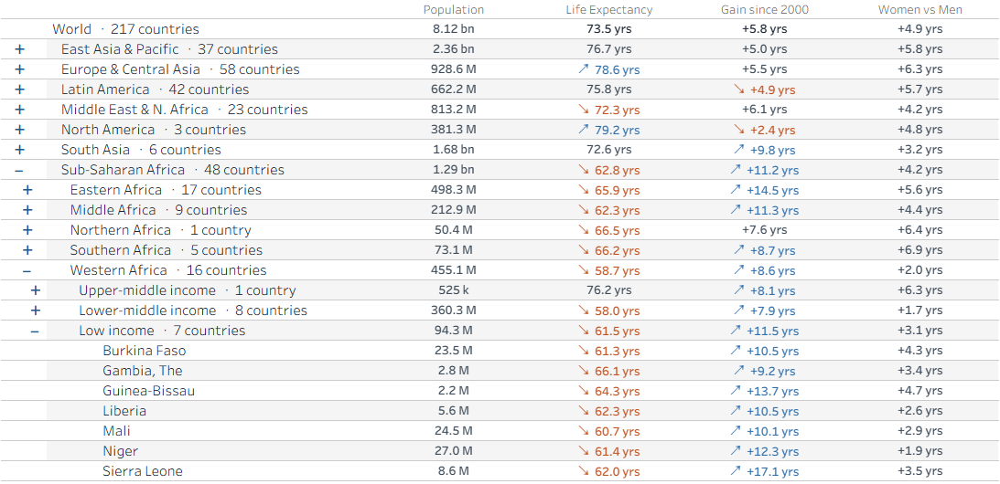
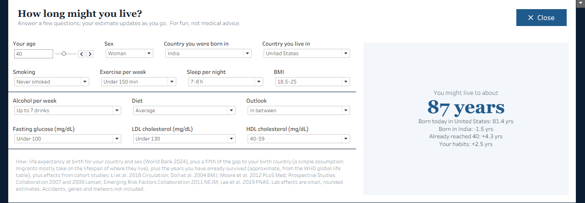
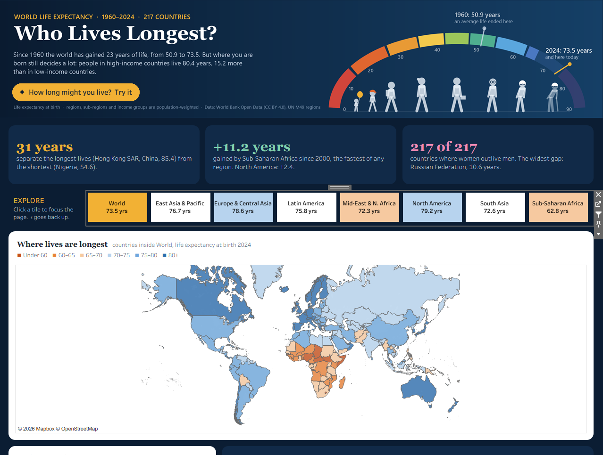

The dashboard is 1280 px wide; on a narrow screen, scroll it sideways or open it on Tableau Public.
A technical walkthrough of a Tableau Public dashboard on 64 years of World Bank data: parameter-action navigation, a five-level drill-down, a map that follows the selection, and a “how long might you live?” predictor built from parameters and dynamic zone visibility.
The dashboard is 1280 px wide; on a narrow screen, scroll it sideways or open it on Tableau Public.
That is the story. The rest of this post is about how it is built: which Tableau features carry each part of the page, the calculations behind them, and the traps I hit along the way.
| Feature | Where it is used | What it does here |
|---|---|---|
| Parameter actions | Region tiles, drill table, Collapse all, predictor button | Every click writes a parameter; every sheet reads it. No filters or dashboard actions in the navigation. |
| FIXED LOD expressions | Region tiles | Look up the selected unit's level and parents once, on every row. |
| Parameter-driven drill-down | Explore-the-hierarchy table | Opens and closes rows five levels deep with one parameter and one click action. |
| Dynamic zone visibility | “How long might you live?” panel | Shows the panel and hides the map, numbers and charts from one boolean field. |
| Range and list parameters | Predictor questions | 14 inputs (a slider and 13 dropdowns) feed a single calculation. |
| Filled map + geographic role | “Where lives are longest” | ISO alpha-2 codes with the Country role; one filter zooms the map to the selection. |
| Calculated labels | Trend chart | Labels the line ends and the dips (COVID-19, HIV/AIDS) from a single field. |
| Multi-field formatted labels | KPI band, spotlight, predictor result | Big number, unit and context line in one Text mark, each in its own size and colour. |
| Rounded corners (2024.3+) | Every card, the buttons | corner-radius on dashboard zones. |
| Image objects | Header arc, habits wheel | Custom artwork drawn from the data, placed as dashboard images. |
| Floating layout | The whole page | Every zone has an exact position on a 1280 px wide canvas. |
The source is World Bank Open Data (CC BY 4.0): life expectancy at birth (total, female, male) and population, 1960–2024. Regions are the World Bank's seven; sub-regions come from the UN M49 standard. That gives five levels: World (1) › Region (7) › Sub-region (28) › Income group (62) › Country (217).
Instead of one wide extract, a small script reshapes everything into two tall CSV files. Each one is shaped for the sheets that read it:
Kind column: Trend (one row per unit and year), Sex, Rank and Map. Each chart filters to its own Kind, so one data source serves the map, trend, dot plot, rankings, spotlight and predictor.Doing the hard maths (weighted rollups, quartile bands, rankings) before Tableau keeps every calculation in the workbook short and fast. Tableau's job is the interaction.
The tile strip replaces dropdowns. One sheet shows the selected unit (gold), its parent as a “‹” tile, and its children. A click runs two parameter actions: one writes the tile's unit to p_SelectedUnit, the other resets the table's open rows. Every other sheet reads p_SelectedUnit, so the whole page follows one click.
To know which tiles to show, every row needs the selected unit's level and parents. A FIXED LOD looks them up once, for the whole table:
// Sel Level: the selected unit's level, on every row
{FIXED : MAX(IIF([Unit No] = [p_SelectedUnit], [Level], NULL))}
// Show Tile: the selected unit, its parent, and its children
[Metric Order] = 1 AND (
[Unit No] = [p_SelectedUnit]
OR [Unit No] = CASE [Sel Level] WHEN 2 THEN 'World'
WHEN 3 THEN [Sel Group]
WHEN 4 THEN [Sel Division] END
OR ([Level] = [Sel Level] + 1 AND [the row sits under the selected unit])
)Each tile is a Bar mark on a fixed 0–1 axis, so it fills its cell; its colour is a Tile field (Back / Current / Top 25% / Bottom 25% / Middle). A self-deselecting action (a filter action that targets a TRUE/FALSE pair) clears the selection highlight after each click, so the tiles never look greyed out.

The table uses the parameter-driven drill-down from my hierarchy drill-down write-up, here on real data and five levels deep:
|World|SSF|SSF-WesternAfric|.p_OpenedRows, remembers which paths are open.Two formatting techniques make it read as a tree:
// Toggle: its own row field, so it can be styled blue and bold on its own;
// the indent grows with the level, so the sign stays next to its name
REPLACE(SPACE(([Level] - 1) * 2), ' ', CHAR(160))
+ IIF([Level] = 1 OR [Level] = 5, CHAR(160), IIF([Is Open], '–', '+'))
// Band Marker: a direction against peers, coloured by the Band palette
IF [Band] = 'Top 25%' THEN '↗ ' ELSEIF [Band] = 'Bottom 25%' THEN '↘ ' ELSE '' ENDA header can only take one style, so the +/– lives in its own row field (styled blue and bold), and the name with “· 16 countries” in the next. The indent is built from non-breaking spaces (CHAR(160)), which hold their width in a header.
Country rows carry an ISO alpha-2 code with Tableau's Country (ISO 3166-1 alpha-2) geographic role, which gives a Multipolygon mark with generated latitude and longitude. The same Path column the drill uses also filters the map:
// Show Map: countries inside the selected unit, at any level
[Kind] = 'Map' AND CONTAINS([Path], '|' + [p_SelectedUnit] + '|')Because the filter changes the marks, Tableau re-zooms the map automatically: pick Western Africa and the map shows those 16 countries. The colour is a six-step band (orange under 60 → blue 80+). It uses the same two colours as the table text and the tiles: blue always means longer lives, orange shorter.
The trend compares the selected unit (blue) with the world (grey). One calculated field labels the start, the end and the dips:
// End Label (on Label, never on Tooltip)
IF MIN([Year]) = 2024 THEN ATTR([Unit Name]) + ' ' + STR(ROUND(AVG([Life Expectancy]), 1))
ELSEIF MIN([Year]) = 1960 THEN STR(ROUND(AVG([Life Expectancy]), 1))
ELSEIF ATTR([Unit No]) = [p_SelectedUnit] AND MAX([Note]) <> '' THEN MAX([Note])
ENDThe notes are found in the data, not placed by hand. A known event (COVID-19, HIV/AIDS, the Rwandan genocide, the Khmer Rouge years) is noted only if the unit contains the countries affected and its own line drops clearly inside that event's window. World shows only COVID-19; southern Africa shows HIV/AIDS.

14 parameters: a range parameter shown as a slider (age), and list parameters for sex, country you were born in, country you live in (217 names each), smoking, exercise, sleep, BMI, alcohol, diet, outlook, fasting glucose, LDL and HDL.
One calculation over the country-you-live-in row (filtered by [Unit Name] = [p_LiveIn] AND [Series] = [p_Sex]):
// Pred Estimate
MAX([p_Age] + 1,
AVG([Life Expectancy]) // at birth, country and sex (World Bank 2024)
+ [Pred Born Adj] // a fifth of the gap to the birth country (assumption)
+ MIN([Pred Survived]) // years already survived (approx. WHO global life table)
+ MIN([Pred Habits])) // sum of CASE [p_Smoking] WHEN 'Smoke now' THEN -9 ... END, capped -20..+12
// Pred Survived: piecewise-linear in age
IF [p_Age] <= 20 THEN [p_Age] * 0.05
ELSEIF [p_Age] <= 50 THEN 1 + ([p_Age] - 20) * 5 / 30
ELSEIF [p_Age] <= 65 THEN 6 + ([p_Age] - 50) * 3.5 / 15
ELSEIF [p_Age] <= 80 THEN 9.5 + ([p_Age] - 65) * 5.5 / 15
ELSE 15 + ([p_Age] - 80) * 0.6 ENDThe birth country reaches a different row than the filtered one, so it uses a FIXED LOD, which is computed before dimension filters:
// Pred Born LE: the birth country's life expectancy, same sex
{FIXED : AVG(IIF([Kind] = 'Sex' AND [Level] = 5 AND [Unit Name] = [p_BornIn]
AND [Series] = [p_Sex], [Life Expectancy], NULL))}
// Pred Born Adj: a fifth of the gap (migrants mostly take on the lifespan of where they live)
IIF([p_BornIn] = [p_LiveIn], 0, 0.2 * (MIN([Pred Born LE]) - AVG([Life Expectancy])))The 0.2 is a simple assumption, not a published figure: research on migrants finds their lifespan mostly follows the country they live in. The other effect sizes come from large cohort studies: smoking (Doll et al., BMJ 2004), activity (Moore et al., PLoS Medicine 2012), BMI (Prospective Studies Collaboration, Lancet 2009), the combined habits (Li et al., Circulation 2018), diabetes (Emerging Risk Factors Collaboration, NEJM 2011), cholesterol (Prospective Studies Collaboration, Lancet 2007) and optimism (Lee et al., PNAS 2019). The lab effects are small, rounded estimates. It is for fun, not medical advice.
p_ShowPredictor holds "Y" or "N". The gold button and the Close button are one-mark sheets; their parameter actions write "Y" and "N".[p_ShowPredictor] = "Y" shows the 18 panel zones, and [p_ShowPredictor] <> "Y" keeps the map, spotlight, numbers and charts.corner-radius (Tableau 2024.3+) on each card, the tiles' container and the buttons, on a navy page.
The tile label compares each unit with the selected unit's parent. World has no parent, so the comparison was NULL, and IIF(NULL, …) returns NULL: every World-level tile lost its label. IFNULL(…, '') fixed it.
After new columns were added to a CSV, Tableau kept reporting them as missing, because it reuses a cached copy keyed by the file path. Putting the data year in the file name gives new data a fresh file.
Tableau Desktop would not paint one large floating box behind other floating zones, and pushed floating sheets out of other sheets' slots. So the predictor panel takes the map's exact slot (with the map hidden) and is built from white zones that meet edge to edge.
Colour, weight and alignment for a row header go on the field's label format; the header format only sets its width and size. That is why the +/– needed its own field.
A 217-country list with codes as values and names as aliases would not select its value in a compact dropdown (it showed the first country). Storing the names themselves as the values fixed it.
% needs integers (wrap in INT), and dividing two integers returns a decimal; use DIV() for whole-number division.
Ranking all 217 countries puts Monaco, San Marino and Liechtenstein on top. Limiting rankings to countries of 1M+ people gives a more useful story: Hong Kong, Kuwait, Switzerland.